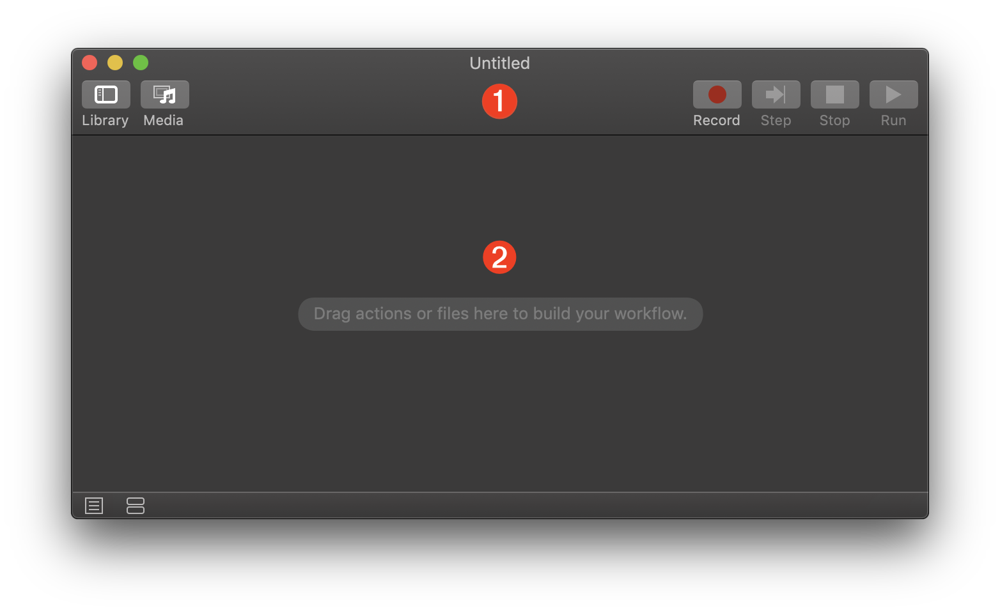
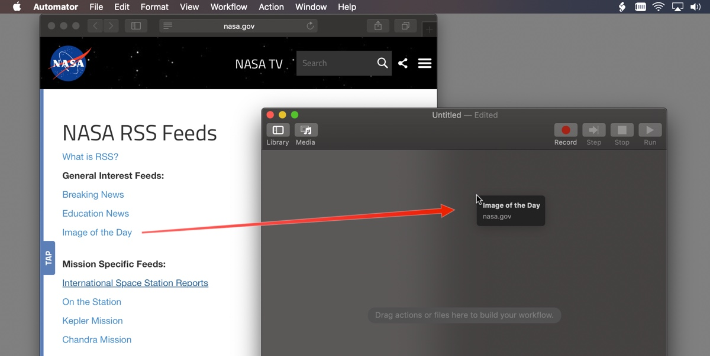
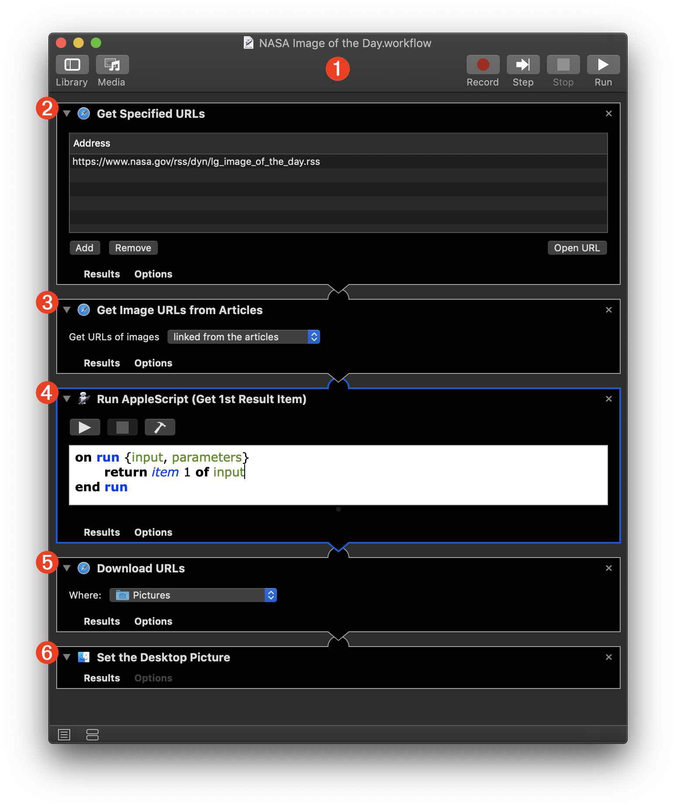
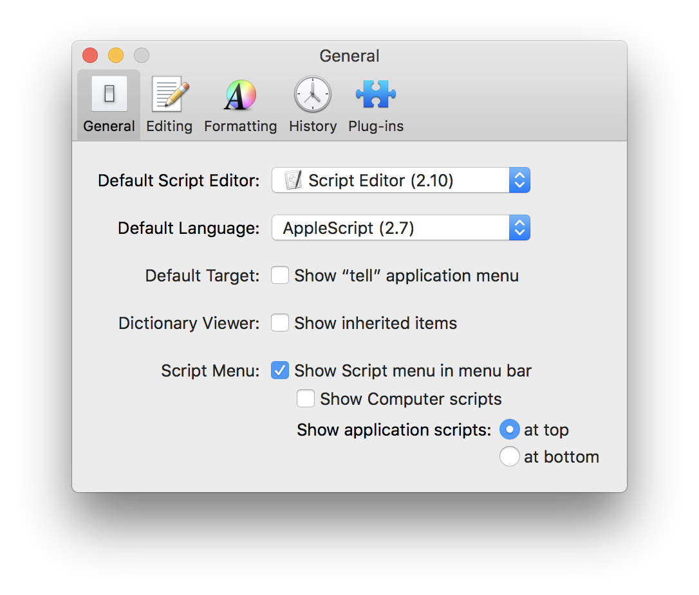
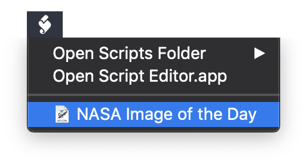
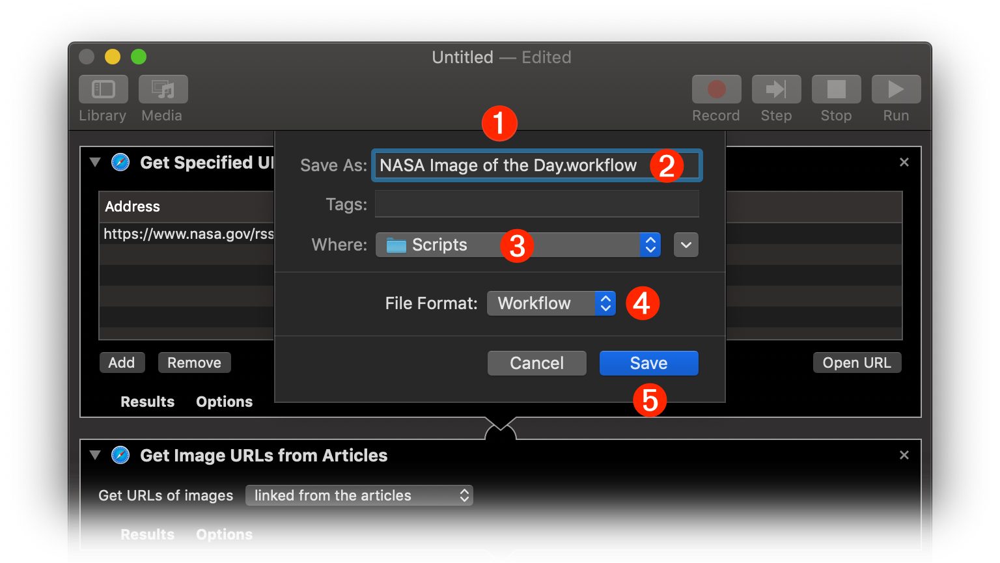
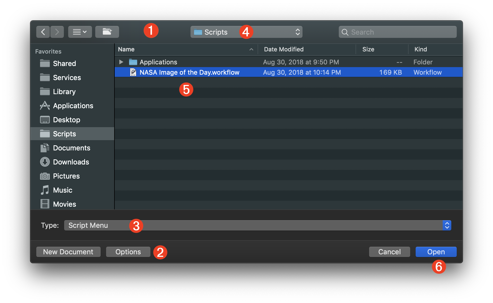

TAP TO HIDE SIDEBAR


Automator: Workflows
The basic format for Automator documents is as a standard workflow, created using the Workflow template. A “standard workflow” contains no input settings, is not self-running, and must be executed from within Automator, or by another workflow, or by the macOS Script Menu.
The standard workflow is very flexible and can be used to perform a variety of tasks, and is also useful for designing and pre-flighting automation ideas and concepts.

1 The Automator workflow document window.
2 The workflow assembly pane where Automator actions are placed in the order in which they are executed.
Set the Desktop Picture to the NASA Image of the Day
Here’s an example workflow that sets the macOS desktop picture to the NASA Image of the Day dowloaded from the NASA website. The saved workflow file is accessed and run using the built-in macOS system-wide Script Menu.
This workflow will parse the NASA Image of the Day RSS feed, listed on NASA RSS Feeds webpage, download the latest image file, and make it the current desktop picture.
To construct the workflow, follow the steps outlined below. (Optionally, you can DOWNLOAD the example completed workflow file.)
| DO THIS ► | Open a new browser window, and navigate to the NASA RSS Feeds webpage: https://www.nasa.gov/content/nasa-rss-feeds |
| DO THIS ► | Next, launch Automator and position a new workflow window in behind and to the right of the browser window. |
| DO THIS ► | Drag the Image of the Day link from the browser webpage into the workflow assembly area of the Automator document and release the cursor (see illustration below). |

A new Get Specified URLs action containing the RSS feed URL will be added to the Automator workflow (see below). The feed URL will be passed as input to the next action when the workflow is run.
Construct the rest of the workflow as detailed below:
1 A standard Automator workflow file will no specified input controls.
2 The Get Specified URLs action containing the RSS feed URL. When the workflow is executed, this URL will be passed to the next action for processing.
(instructions continued below image)

3 Next, add the Get Image URLs from Articles action, found in the Internet library category, to the end of the workflow. Set the action’s parameter setting to “Get URLs of images linked from the articles” from the popup menu. When the workflow is executed, this action will parse the passed RSS feeds and extract any image links from their text. The resulting collection of image URLs will be passed to the next action.
4 To extract today’s image link from the passed list of image links, add the Run AppleScript action to the end of the workflow and edit the main contant of its script to: return item 1 of input which will pass the first, and most current link in the list of passed links, to the next action in the workflow.
5 Next, add the Download URLs action, found in the Internet library category, to the end of the workflow. Choose a destination folder for the downloaded image from the popup menu in the action view. This action will download the image file from the passed URL and place it in the destination folder. The result of this action will be a file reference to the downloaded image file, which is passed to the next action in the workflow.
6 The final action in the workflow wil be one for setting the desktop picture to the downloaded image file. Locate and add the Set Desktop Picture action (in the “Files & Folders” library) to the end of the workflow.
Save and Install the Workflow
Since the workflow is not a self-running application, it must be executed by Automator, another application or workflow, or by the system-wide Script Menu utility.
| DO THIS ► | If it is not already on, activate the macOS Script Menu by launching the Script Editor application (Launch Pad > type: Script Editor), and select the “Show Script Menu in menu bar” checkbox in the Script Editor’s Preferences window (⌘,) Leave the “Show computer scripts” option unselected.  |
When you turn on the macOS Script Menu, it will create a “Scripts” folder in your user Library folder. Script and workflow files placed or saved within the Scripts folder will appear on the Script Menu, which will appear as a script icon in the top right menu bar.

Follow the steps detailed below to save and install the workflow for access using the Scripts Menu utility.

1 In Automator, type Command-S (⌘S) or choose “Save” from the File menu to display the saving sheet for the workflow document.
2 Enter a name for the workflow as you want it to appear in the Script Menu.
3 Choose the Scripts folder (Home > Library > Scripts) as the directory in which to save the workflow.
4 Select “Worfklow” as the file format for the saved Automator document.
5 Click the “Save” button to complete the saving and installation process.
Run the workflow whenever you wish to update the desktop picture to the current NASA “Image of the Day.”
Edit the Workflow
To edit the saved workflow, choose “Open…” from the File menu in Automator. The file chooser dialog will appear:

1 The file chooser dialog.
2 Press the Options button to toggle the display of the Type popup menu 3
3 Select “Script Menu” from the workflow Type popup menu to reveal the contents of the system Scripts folder 4 in the dialog.
4 The system Scripts folder.
5 Select the workflow in the Scripts folder.
6 Press the Open button to edit the workflow in Automator.
There are hundreds of free RSS feeds to information and podcasts. Here are links to a few free public RSS feeds:
This webpage is in the process of being developed. Any content may change and may not be accurate or complete at this time.
DISCLAIMER